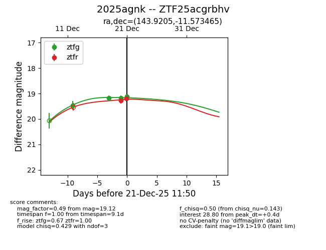
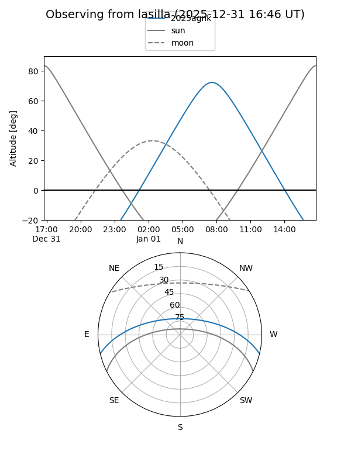
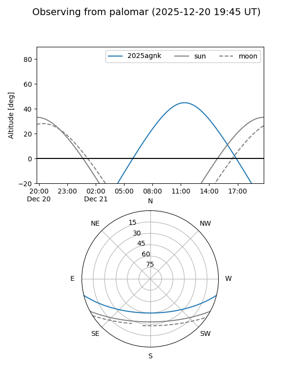
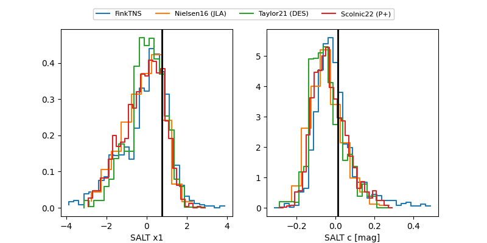

2025agnk
Target 2025agnk at 2025-12-21 11:52
Aliases and brokers:
FINK: fink-portal.org/ZTF25acgrbhv
Lasair: lasair-ztf.lsst.ac.uk/objects/ZTF25acgrbhv
ALeRCE: alerce.online/object/ZTF25acgrbhv
TNS: wis-tns.org/object/2025agnk
YSE: ziggy.ucolick.org/yse/transient_detail/2025agnk
alt names
ZTF25acgrbhv (ztf,fink_ztf)
2025agnk (tns,yse)
Coordinates:
equatorial (ra, dec) = 143.9205,-11.57346
equatorial (HMS+DMS) = 09:35:40.91,-11:34:24.47
galactic (l, b) = (245.5086,+28.76589)
Flags:
Photometry:
last ztfg=19.12, ztfr=19.19
4 ztfg, 2 ztfr detections
Lightcurve

Visibility


Additional plots
